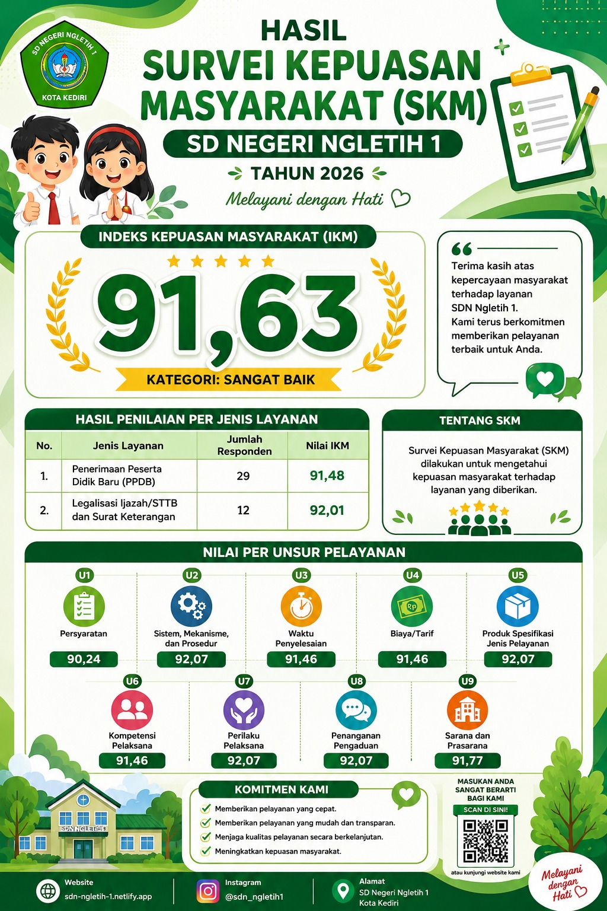

Survei Kepuasan Masyarakat (SKM) merupakan salah satu indikator untuk mengukur tingkat kepuasan masyarakat terhadap kualitas pelayanan yang diberikan oleh SDN Ngletih 1.
Survei Kepuasan Masyarakat (SKM) merupakan hasil pengukuran tingkat kepuasan masyarakat terhadap pelayanan yang diberikan oleh penyelenggara pelayanan publik.
Melalui survei SKM, SDN Ngletih 1 dapat mengetahui kualitas pelayanan yang telah diberikan sekaligus menjadi bahan evaluasi untuk meningkatkan mutu pelayanan kepada peserta didik, orang tua, maupun masyarakat.
Mengukur kualitas pelayanan sekolah berdasarkan penilaian masyarakat.
Menjadi dasar peningkatan mutu pelayanan secara berkelanjutan.
Mewujudkan pelayanan publik yang profesional, transparan, dan berkualitas.
Hasil Survei Kepuasan Masyarakat terhadap pelayanan SDN Ngletih 1.

SD Negeri Ngletih 1 senantiasa berkomitmen untuk memberikan pelayanan terbaik kepada seluruh masyarakat. Sebagai bentuk evaluasi dan upaya peningkatan mutu layanan, SD Negeri Ngletih 1 telah melaksanakan Survei Kepuasan Masyarakat (SKM) Tahun 2026.
Berdasarkan hasil survei yang telah dilakukan, SD Negeri Ngletih 1 memperoleh nilai Indeks Kepuasan Masyarakat (IKM) sebesar 91,63 dengan kategori "Sangat Baik".
Capaian ini menjadi bukti bahwa layanan yang diberikan telah memenuhi harapan masyarakat serta menjadi motivasi bagi kami untuk terus meningkatkan kualitas pelayanan secara berkelanjutan.
Kami mengucapkan terima kasih atas kepercayaan dan partisipasi seluruh masyarakat dalam memberikan penilaian, masukan, serta saran yang membangun.
SD Negeri Ngletih 1 akan terus berupaya menghadirkan pelayanan yang cepat, mudah, transparan, dan berkualitas demi mewujudkan pelayanan pendidikan yang semakin baik.